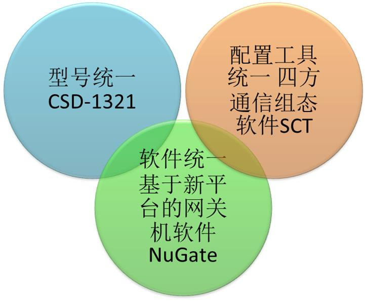
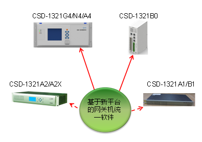
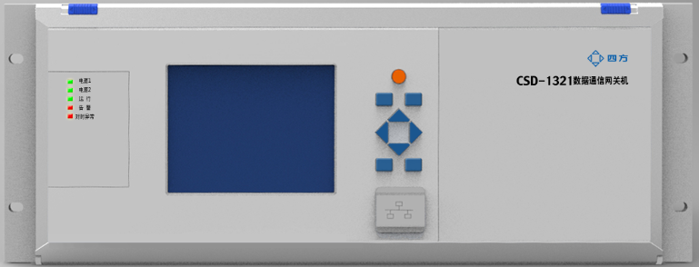
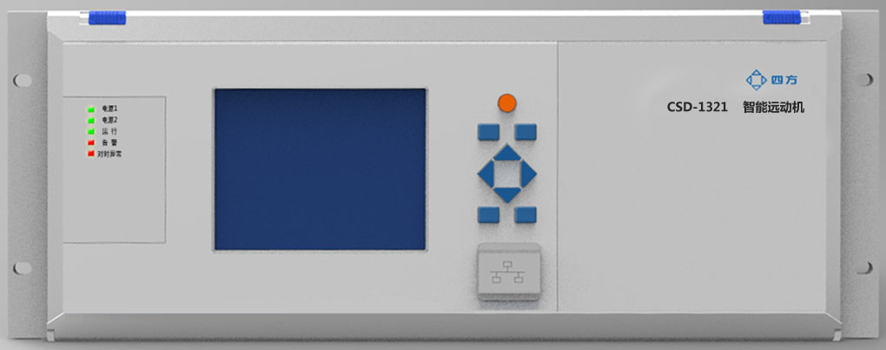
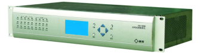
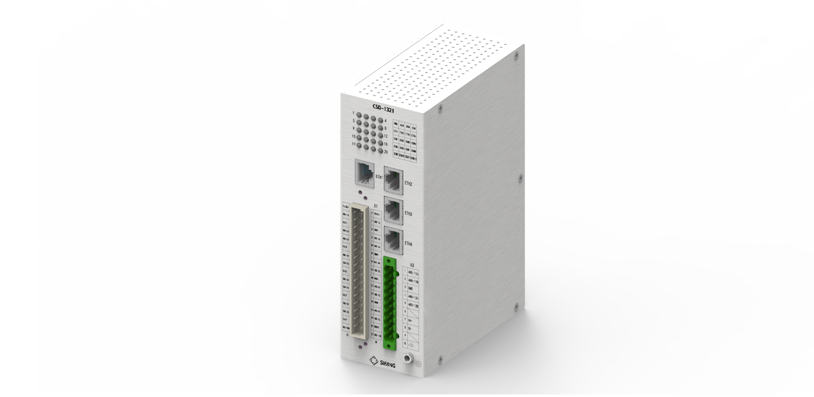
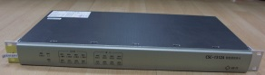
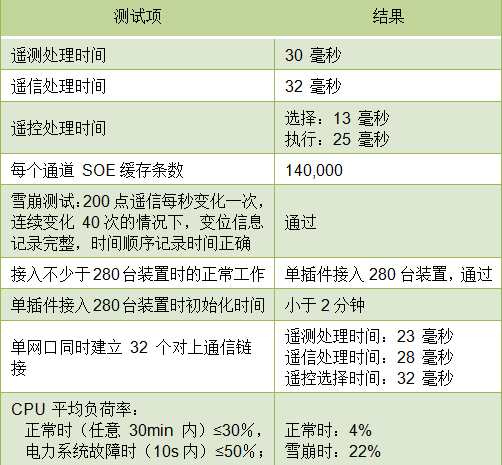

CSD-1321系列智能通信控制装置
项目意义
- 三个统一：通信类装置统一软件、统一型号、统一工具

- 三个解耦：平台软件和操作系统解耦，软件和硬件解耦，规约模块和平台软件解耦，同样的软件在不同的硬件平台上运行形成同一型号产品的不同产品形态。

产品形态和典型应用
- CSD-1321G4国网数据通信网关机（Ⅰ区、Ⅱ区）
- 4U机架安装多CPU装置
- 取代传统的远动机，四遥量采集，遥控执行；取代传统的保信子站，实现保护事件、故障参数采集，定值调阅和修改，录波采集和传输
- 实现告警直传、远程浏览、一键式顺控等高级应用
- 2016年7月，国网四统一四规范预测试，以样例一次性通过率第一的成绩通过检测

- CSD-1321N4智能远动机
- 4U机架安装多CPU装置
- 集成远动、保信、电量计量、在线监测、PMU集中器五大业务，具备稳态、暂态和动态全景数据处理能力
- 具备源端维护、程序化控制等高级应用功能
- 2016年3月，南网委托开普实智能远动机保信业务测试，无遗留缺陷第一轮通过

- CSD-1321A2轨道交通电气自动化通信控制装置
- 内置交换模块，适合轨道交通电气自动化系统组网环境
- 可选择x86、ARM等不同硬件架构

- CSD-1321B1变电站通信管理装置/CSD-1321B0分布式通信控制单元
- 1U机架安装和导轨安装单CPU装置不同形态产品共享所有软硬件成果
- 可接入以太网、串口及其他接口装置
- 安装灵活，占用空间小


关键软硬件技术指标
- 硬件配置（4U装置）
- 双核嵌入式CPU，2 GB DDR SDRAM
- 支持SATA接口，可配置各种容量的SSD固态硬盘，目前128GB
- 每块以太网板6路RJ45以太网口可支持千兆以太网；每块串口板6路RS485/232复用串口；每块DIO板3路开出、14路开入；B码对时接口可选
- 采用CSD平台的SMBG背板总线架构，总带宽超过1Gbps
- 关键性能指标（江苏电科院实测数据）
- 双核嵌入式CPU，2 GB DDR SDRAM
- 支持SATA接口，可配置各种容量的SSD固态硬盘，目前128GB
- 每块以太网板6路RJ45以太网口可支持千兆以太网；每块串口板6路RS485/232复用串口；每块DIO板3路开出、14路开入；B码对时接口可选
- 采用CSD平台的SMBG背板总线架构，总带宽超过1Gbps

产品典型应用案例
已有200台以上的应用案例，比较典型的案例如下
- 宁夏 黎阳电厂750KV站，接入国调、西北网，完成远动、GSP保信子站、告警直传、图形浏览业务
- 江苏 玉华变200KV站，接入盐城地调，完成远动业务
- 佛山 松夏220KV站，接入广东省调、佛山地调，完成保信、远动业务
- 东莞 纵江500KV站，接入南网总调、东莞地调，完成保信、远动、PMU集中器业务
- 山东莱芜希格斯分布式光伏集控中心项目，分布式光伏接入集控中心
★创新铸就四方，梦想点亮未来★
★Innovation Lights Our Future★
四方股份为您提供优质的解决方案